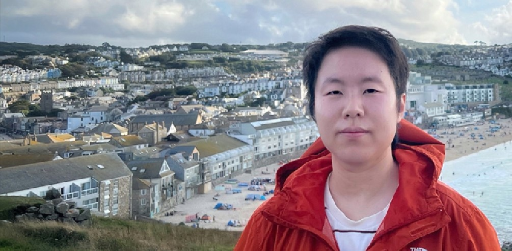

Wei ZHOU
Assistant Professor at Cardiff University

I am currently an Assistant Professor in the School of Computer Science and Informatics at Cardiff University, United Kingdom. I am a committee member of British Standards Institution (BSI). I am also a member of Visual Computing Research Group, which is led by Prof. Paul Rosin. I am participating in the JPEG standardization activities. My research interests mainly focus on perceptual image and video processing.
Biography / Google Scholar / ResearchGate / DBLP / Linkedin / Github / Offical Webpage / Email: zhouw26@cardiff.ac.uk
About Me
LION Lab 
I direct the InteLligent multImedia perceptiOn and generatioN (LION) research lab. My lab focuses on studying different perceptual and generative models in the intelligent multimedia field. Our lab is always looking for talented and self-motivated students.
Each year, our School has a number of funding schemes to support PhD research (School Studentships). Chinese PhD applicants are also welcome to apply via Cardiff University-China Scholarship Council joint-funded PhD Scholarship. If you are interested in working with me on cutting-edge image processing/multimedia research, please drop me an email.
Cardiff University is ranked top 5 (CSRankings) across the UK in the areas of Artificial Intelligence, Computer Vision, Computer Graphics, and Natural Language Processing. I have worked with more than 15 students and extensively collaborated with researchers in both academia and industry worldwide. I will actively recommend my students for internships (Google, Meta, Intel, Microsoft, Tencent, Alibaba, etc.) and help them establish networking.
News
The special issue deadlines have been extended. Manuscripts can be submitted through the official websites.
Publications
(*Co-first Author, #Corresponding Author)Journal Papers
- Reduced-Reference Quality Assessment of Point Clouds via Content-Oriented Saliency Projection
Wei Zhou, Guanghui Yue, Ruizeng Zhang, Yipeng Qin, Hantao Liu
IEEE Signal Processing Letters (SPL), 2023 | paper | RR-CAP code | [The first image-based RR metric for 3D point clouds] - Dual-Constraint Coarse-to-Fine Network for Camouflaged Object Detection
Guanghui Yue, Houlu Xiao, Hai Xie, Tianwei Zhou, Wei Zhou, Weiqing Yan, Baoquan Zhao, Tianfu Wang, Qiuping Jiang
IEEE Transactions on Circuits and Systems for Video Technology (TCSVT), 2023 | paper - LIQA: Lifelong Blind Image Quality Assessment
Jianzhao Liu*, Wei Zhou*, Xin Li, Jiahua Xu, Zhibo Chen
IEEE Transactions on Multimedia (TMM), 2022 | paper | [The first lifelong learning-based work in IQA field] - A Brief Survey on Adaptive Video Streaming Quality Assessment
Wei Zhou, Xiongkuo Min, Hong Li, Qiuping Jiang
Journal of Visual Communication and Image Representation (JVCI), 2022 | paper - No-Reference Quality Assessment for 360-degree Images by Analysis of Multifrequency Information and Local-global Naturalness
Wei Zhou, Jiahua Xu, Qiuping Jiang, Zhibo Chen
IEEE Transactions on Circuits and Systems for Video Technology (TCSVT), 2021 | paper | MFILGN code | [The first natural scene statistics algorithm for VR quality assessment] - Blind Omnidirectional Image Quality Assessment with Viewport Oriented Graph Convolutional Networks
Jiahua Xu*, Wei Zhou*, Zhibo Chen
IEEE Transactions on Circuits and Systems for Video Technology (TCSVT), 2021 | paper | VGCN code | [The first framework that based on graph networks for predicting the perceptual quality of VR images, Recognized as Popular Documents] - Binocular Rivalry Oriented Predictive Auto-Encoding Network for Blind Stereoscopic Image Quality Measurement
Jiahua Xu*, Wei Zhou*, Zhibo Chen, Suiyi Ling, Patrick Le Callet
IEEE Transactions on Instrumentation & Measurement (TIM), 2021 | paper | PAD-Net code - Tensor Oriented No-Reference Light Field Image Quality Assessment
Wei Zhou, Likun Shi, Zhibo Chen, Jinglin Zhang
IEEE Transactions on Image Processing (TIP), 2020 | paper | Tensor-NLFQ code | [The first work explores tensor theory for evaluating light field image quality, Recognized as Popular Documents] - Blind Quality Assessment for Image Superresolution Using Deep Two-Stream Convolutional Networks
Wei Zhou, Qiuping Jiang, Yuwang Wang, Zhibo Chen, Weiping Li
Information Sciences (INS), 2020 | paper | DeepSRQ code - A Full-Reference Stereoscopic Image Quality Measurement via Hierarchical Deep Feature Degradation Fusion
Qiuping Jiang*, Wei Zhou*, Xiongli Chai, Guanghui Yue, Feng Shao, Zhibo Chen
IEEE Transactions on Instrumentation & Measurement (TIM), 2020 | paper - Dual-Stream Interactive Networks for No-Reference Stereoscopic Image Quality Assessment
Wei Zhou, Zhibo Chen, Weiping Li
IEEE Transactions on Image Processing (TIP), 2019 | paper | StereoQA-Net code | [The first deep learning-based 3D quality prediction work considers the hierarchical dual-stream interactive nature of the human visual system] - No-Reference Light Field Image Quality Assessment Based on Spatial-Angular Measurement
Likun Shi*, Wei Zhou*, Zhibo Chen, Jinglin Zhang
IEEE Transactions on Circuits and Systems for Video Technology (TCSVT), 2019 | paper | NR-LFQA code - Blind Stereoscopic Video Quality Assessment: From Depth Perception to Overall Experience
Zhibo Chen (advisor), Wei Zhou, Weiping Li
IEEE Transactions on Image Processing (TIP), 2018 | paper | BSVQE code | [The first attempt combines depth perception and overall experience in 3D vision, Recognized as Popular Documents] - Corrections to Blind Quality Assessment for Image Superresolution Using Deep Two-Stream Convolutional Networks
Wei Zhou, Qiuping Jiang, Yuwang Wang, Zhibo Chen, Weiping Li
Information Sciences (INS), 2021 | paper - Quality Assessment of Multi-Exposure Image Fusion by Synthesizing Local and Global Intermediate References
Jiawu Xu*, Wei Zhou*, Hong Li, Fucui Li, Qiuping Jiang
Displays, 2022 | paper - GraphIQA: Learning Distortion Graph Representations for Blind Image Quality Assessment
Simeng Sun, Tao Yu, Jiahua Xu, Wei Zhou, Zhibo Chen
IEEE Transactions on Multimedia (TMM), 2022 | paper | GraphIQA code | [ESI Highly Cited Paper] - A Bayesian Deep Image Prior Downscaling Approach for High-resolution Soil Moisture Estimation
Yuan Fang, Linlin Xu, Yuhao Chen, Wei Zhou, Alexander Wong, David A. Clausi
IEEE Journal of Selected Topics in Applied Earth Observations and Remote Sensing (JSTARS), 2022 | paper - Re-visiting Discriminator for Blind Free-Viewpoint Image Quality Assessment
Suiyi Ling, Jing Li, Zhaohui Che, Wei Zhou, Junle Wang, Patrick Le Callet
IEEE Transactions on Multimedia (TMM), 2020 | paper - Stereoscopic Omnidirectional Image Quality Assessment Based on Predictive Coding Theory
Zhibo Chen, Jiahua Xu, Chaoyi Lin, Wei Zhou
IEEE Journal of Selected Topics in Signal Processing (JSTSP), 2020 | paper - Mechanism and Application of Capacitive-Coupled Memristive Behavior Based on a Biomaterial Developed Memristive Device
Shuangsuo Mao, Xuejiao Zhang, Guangdong Zhou, Yuanzheng Chen, Chuan Ke, Wei Zhou, Bai Sun, Yong Zhao
ACS Applied Electronic Materials, 2021 | paperConference Papers
- Blind Omnidirectional Image Quality Assessment: Integrating Local Statistics and Global Semantics
Wei Zhou, Zhou Wang
IEEE International Conference on Image Processing (ICIP), 2023 | paper - Subjective Quality Assessment of Enhanced Retinal Images
Guanghui Yue, Shaoping Zhang, Yuan Li, Xiaoyan Zhou, Tianwei Zhou, Wei Zhou
IEEE International Conference on Image Processing (ICIP), 2023 | paper - Quality Assessment of Image Super-Resolution: Balancing Deterministic and Statistical Fidelity
Wei Zhou, Zhou Wang
The 30th ACM International Conference on Multimedia (ACM-MM), 2022 | paper | [The first work looks at the reconstructed quality of image super-resolution in a 2D fidelity space] - Adaptive Hypergraph Convolutional Network for No-Reference 360-degree Image Quality Assessment
Jun Fu, Chen Hou, Wei Zhou#, Jiahua Xu, Zhibo Chen#
The 30th ACM International Conference on Multimedia (ACM-MM), 2022 | paper | [The first hypergraph-based VR quality evaluation framework] - Image Super-Resolution Quality Assessment: Structural Fidelity Versus Statistical Naturalness
Wei Zhou, Zhou Wang, Zhibo Chen
IEEE International Conference on Quality of Multimedia Experience (QoMEX), 2021 (Oral Presentation) | paper | SFSN code | (Invited Paper) - Deep Multi-Scale Features Learning for Distorted Image Quality Assessment
Wei Zhou, Zhibo Chen
IEEE International Symposium on Circuits and Systems (ISCAS), 2021 (Oral Presentation) | paper - Deep Local and Global Spatiotemporal Feature Aggregation for Blind Video Quality Assessment
Wei Zhou, Zhibo Chen
IEEE International Conference on Visual Communications and Image Processing (VCIP), 2020 | paper - No-Reference Light Field Image Quality Assessment Based on Micro-Lens Image
Ziyuan Luo*, Wei Zhou*, Likun Shi, Zhibo Chen
The 34th Picture Coding Symposium (PCS), 2019 | paper - Stereoscopic Video Quality Prediction Based on End-to-End Dual Stream Deep Neural Networks
Wei Zhou, Zhibo Chen, Weiping Li
The 19th Pacific-Rim Conference on Multimedia (PCM), 2018 | paper | EDN code - 3D-HEVC Visual Quality Assessment: Database and Bitstream Model
Wei Zhou, Ning Liao, Zhibo Chen, Weiping Li
IEEE International Conference on Quality of Multimedia Experience (QoMEX), 2016 | paper | project page | [The first 3D-HEVC subjective database considers multiple quality dimensions] - A RGB-D Face Recognition Approach without Confronting the Camera
Wei Zhou, Jianxin Chen, Lei Wang
IEEE International Conference on Computer and Communications (ICCC), 2015 (Oral Presentation) | paper - RTN: Reinforced Transformer Network for Coronary CT Angiography Vessel-level Image Quality Assessment
Yiting Lu, Jun Fu, Xin Li, Wei Zhou, Sen Liu, Xinxin Zhang, Wei Wu, Chongfu Jia, Ying Liu, Zhibo Chen
The 25th International Conference on Medical Image Computing and Computer Assisted Interventions (MICCAI), 2022 | paper | [The first reinforced transformer network for automatic quality evaluation of medical images] - Perceptual Quality Assessment of Internet Videos
Jiahua Xu, Jing Li, Xingguang Zhou, Wei Zhou, Baichao Wang, Zhibo Chen
The 29th ACM International Conference on Multimedia (ACM-MM), 2021 (Oral Presentation) | paper | [The first internet video quality database contains UGC, PGC, OGC videos] - Multi-Metric Fusion Network for Image Quality Assessment
Yanding Peng, Jiahua Xu, Ziyuan Luo, Wei Zhou, Zhibo Chen
The 34th IEEE Conference on Computer Vision and Pattern Recognition Workshops (CVPRW), 2021 | paper | (Winner Award in CVPR CLIC Perceptual Metric Track) - Perceptual Evaluation of Pre-processing for Video Transcoding
Shiyu Huang, Ziyuan Luo, Jiahua Xu, Wei Zhou, Zhibo Chen
IEEE International Conference on Visual Communications and Image Processing (VCIP), 2021 | paper - LIRA: Lifelong Image Restoration from Unknown Blended Distortions
Jianzhao Liu, Jianxin Lin, Xin Li, Wei Zhou, Sen Liu, Zhibo Chen
The 16th European Conference on Computer Vision (ECCV), 2020 | paper - Learning Disentangled Feature Representation for Hybrid-distorted Image Restoration
Xin Li, Xin Jin, Jianxin Lin, Sen Liu, Yaojun Wu, Tao Yu, Wei Zhou, Zhibo Chen
The 16th European Conference on Computer Vision (ECCV), 2020 | paper - Quality Assessment of Stereoscopic 360-degree Images from Multi-viewports
Jiahua Xu, Ziyuan Luo, Wei Zhou, Wenyuan Zhang, Zhibo Chen
The 34th Picture Coding Symposium (PCS), 2019 | paper - Infrared Pedestrian Detection with Converted Temperature Map
Yifan Zhao, Jingchun Cheng, Wei Zhou, Chunxi Zhang, Xiong Pan
Asia-Pacific Signal and Information Processing Association Annual Summit and Conference (APSIPA ASC), 2019 (Oral Presentation) | paper - Unsupervised Single Image Deraining with Self-supervised Constraints
Xin Jin, Zhibo Chen, Jianxin Lin, Zhikai Chen, Wei Zhou
IEEE International Conference on Image Processing (ICIP), 2019 | paper - How Do You Perceive Differently from an AI - A Database for Semantic Distortion Measurement
Shuxin Zhao, Jiahua Xu, Yongquan Hu, Wei Zhou, Sen Liu, Zhibo Chen
IEEE International Symposium on Circuits and Systems (ISCAS), 2019 (Oral Presentation) | paper | Dataset (upon request) - AI-GAN: Signal De-interference via Asynchronous Interactive Generative Adversarial Network
Xin Jin, Zhibo Chen, Jianxin Lin, Wei Zhou, Jiale Chen, Chaowei Shan
IEEE International Conference on Multimedia & Expo Workshops (ICMEW), 2019 (Oral Presentation) | paper - Visual Comfort Assessment for Stereoscopic Image Retargeting
Ya Zhou, Wei Zhou, Ping An, Zhibo Chen
IEEE International Symposium on Circuits and Systems (ISCAS), 2018 (Oral Presentation) | paper | Dataset (upon request) - SDM: Semantic Distortion Measurement for Video Encryption
Yongquan Hu, Wei Zhou, Shuxin Zhao, Zhibo Chen, Weiping Li
The 13th IEEE Conference on Automatic Face and Gesture Recognition (FG), 2018 (Oral Presentation) | paper - A Decomposed Generative Adversarial Network for Image Rain Removal
Xin Jin, Zhibo Chen, Jianxin Lin, Jiale Chen, Wei Zhou, Chaowei Shan
The 29th British Machine Vision Conference (BMVC), 2018 | paper - Perceptual Evaluation of Light Field Image
Likun Shi, Shengyang Zhao, Wei Zhou, Zhibo Chen
IEEE International Conference on Image Processing (ICIP), 2018 (Oral Presentation) | paper | Dataset (upon request) - None Ghosting Artifacts Stitching Based on Depth Map for Light Field Image
Wenyuan Zhang, Shengyang Zhao, Wei Zhou, Zhibo Chen
The 19th Pacific-Rim Conference on Multimedia (PCM), 2018 (Oral Presentation) | paper - Subjective Quality Assessment of Stereoscopic Omnidirectional Image
Jiahua Xu, Chaoyi Lin, Wei Zhou, Zhibo Chen
The 19th Pacific-Rim Conference on Multimedia (PCM), 2018 (Oral Presentation) | paper | Dataset (upon request) - Augmented Coarse-to-fine Video Frame Synthesis with Semantic Loss
Xin Jin, Zhibo Chen, Sen Liu, Wei Zhou
Chinese Conference on Pattern Recognition and Computer Vision (PRCV), 2018 | paperPreprints
- Dehazed Image Quality Evaluation: From Partial Discrepancy to Blind Perception
Wei Zhou, Ruizeng Zhang, Leida Li, Hantao Liu, Huiyan Chen
ArXiv preprint, 2211.12636, 2022 - Blind Quality Assessment of 3D Dense Point Clouds with Structure Guided Resampling
Wei Zhou, Qi Yang, Qiuping Jiang, Guangtao Zhai, Weisi Lin
ArXiv preprint, 2208.14603, 2022 - Deep Decomposition and Bilinear Pooling Network for Blind Night-Time Image Quality Evaluation
Qiuping Jiang, Jiawu Xu, Yudong Mao, Wei Zhou, Xiongkuo Min, Guangtao Zhai
ArXiv preprint, 2205.05880, 2022 - Bayesian Graph Convolutional Network for Traffic Prediction
Jun Fu, Wei Zhou, Zhibo Chen
ArXiv preprint, 2104.00488, 2021
Activities
Conference Volunteer
Conference Attendence
Teaching Assistant
Academic Services
Editorship
Conference Organizer
Journal Reviewer
Technical Committee/Program Committee Member/Conference Reviewer
Selected Awards
Personal Bio
I was born about one year before 1995 (likely to be a post-95 generation but not), in Nanjing, Jiangsu, P. R. China. I have a wide range of interests, including photography, guitar, table tennis, basketball, chess, etc. I also love traveling.
Last updated: June 27, 2021.